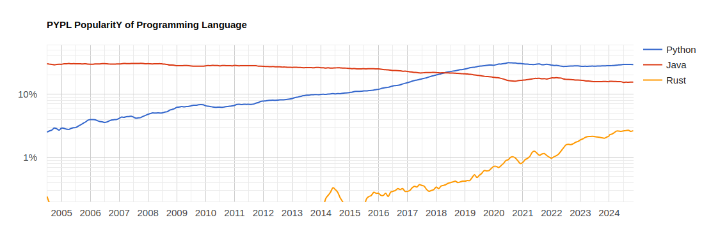
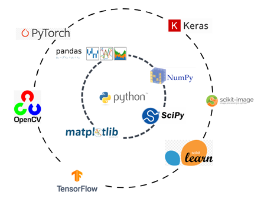
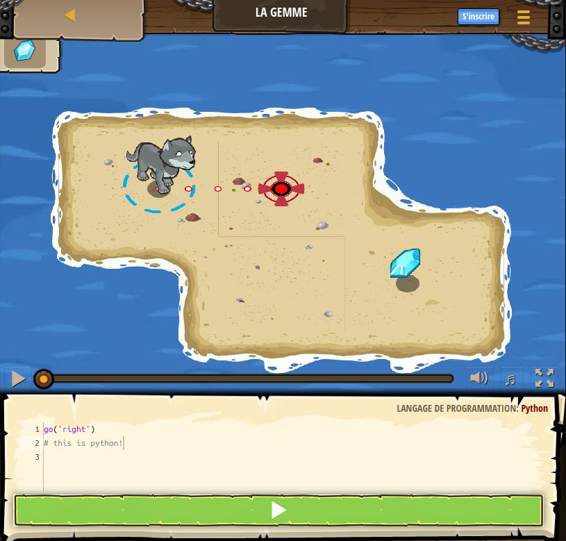

Python
Computational Economics @ Bundesbank
Why Python???
. . .

. . .
Python:
- is popular
- is free and opensource
- has many many libraries
- vibrant community
- lots of online resources
Why Python? (3)
Historically, python was a glue language used to interoperate many low-level/system languages.
It has been increasingly used for web-development (cf django)
. . .
Nowadays it is the lingua franca of machine learning
Most major machine learning / deep learning libraries have python bindings

An example
def say_hello(name):
"""This function prints morning greetings"""
print(f"Good morning {name}!\n")
# we can import libraries
import datetime
t = datetime.datetime.now()
# blocks are defined by indentation and colons
if (t.hour,t.min) <= (9,15):
print("All good?\n")
else:
print("Time to get started?\n")
say_hello("Pablo")Python is everywhere

Windows
Linux
Web
The Python family
There are several flavours of Python:
- Full Syntax
- CPython, PyPy, Pyston
- Subset-Syntax
- micropython
- numba, pythran
- Superset-Syntax
- mypy (*)
- cython
- mojo
- Near-Syntax
- boo
- subset-syntax: restrict functionalities (no classes, simpler objects) for easier compilation
- superset-syntax: add type/memory information
- near-syntax: different language that looks familiar
Examples
- mojo:
fn greet2(name: String) -> String:
return "Hello, " + name + "!"- cython
from libcpp.vector cimport vector
def primes(unsigned int nb_primes):
cdef int n, i
cdef vector[int] p
p.reserve(nb_primes) # allocate memory for 'nb_primes' elements.
n = 2
while p.size() < nb_primes: # size() for vectors is similar to len()
for i in p:
if n % i == 0:
break Python is interpreted
In an interpreted language, instructions are read and translated into processor instructions, one after another.
As consequence, it is:
- flexible
- interactive development
- immediate feedback
- slooooww 1
Intepreters
- Python
- ipython a.k.a. jupyter
- send instructions to a kernel
- receive back MIME objects (with nice html representation)
- VSCode
- has its own python kernel implementation
- C API python.h
- julia
- your own…
Packages and Environment
Python modules
A file ending with .py is a python module
program.py
key = "low"
def something():
return "hey"The content from a module can be imported
from program import somethingTo import all objects in a module (functions, strings, …)
from program import *Submodules
A folder containing modules and an
__init.py__is apackage.import a package or a submodule:
import packagefrom package.submodule import something
The content of modules and submodules is evaluated only once.2
It is actually precompiled.
This is perfect for distributing a package.
Not so much to develop code interactively.
Package managers
Several ways to create / distribute python packages have been developped over the years.
- setup.py, pip
- setuptools, distutils, …
- pipenv, poetry, …
- conda
There are essentially two kinds of packages:
- pip packages
- conda packages
Pip packages
pip files (what are eggs btw)
- pure python
- binary
can be installed with
pip install packageno dependency solving ! no proper uninstallation !
pip files a virtual evnironment created with
venvreproducible setup can be described in
- requirements.txt (old)
- pyproject.toml (new)
directory specific environments can be managed with
poetryorvenv:python -m venv directory
Conda environment
conda files
installed in a conda environment
with proper / reversible dependency solving
- very quick using
mambaormicromamba
- very quick using
reproducible environment can be described in:
- environment.yml (dependencies)
- manifest (…)
directory specific environments can be managed with
pixi
Syntax Review
Let’s setup the environment specified in requirements.txt
. . .

Move to python syntax tutorial